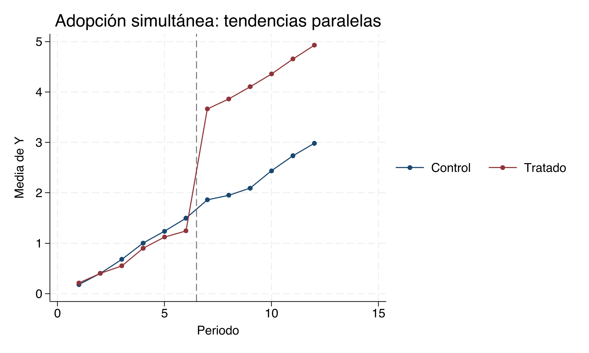
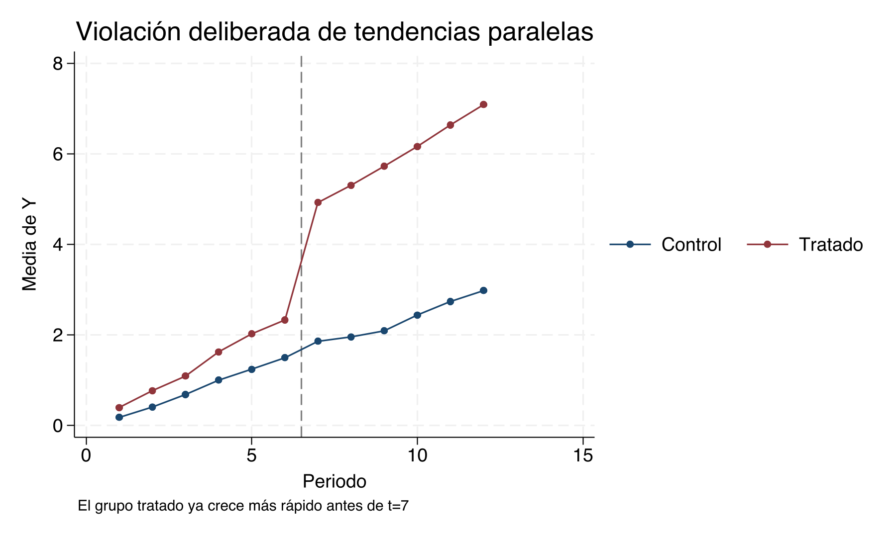
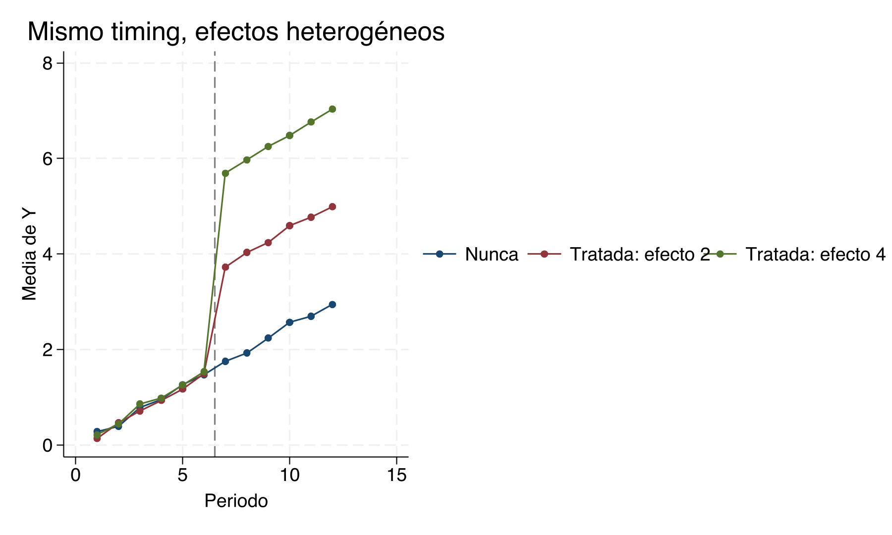
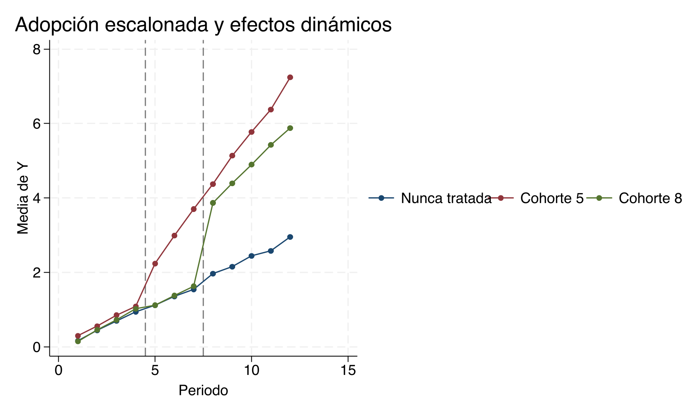
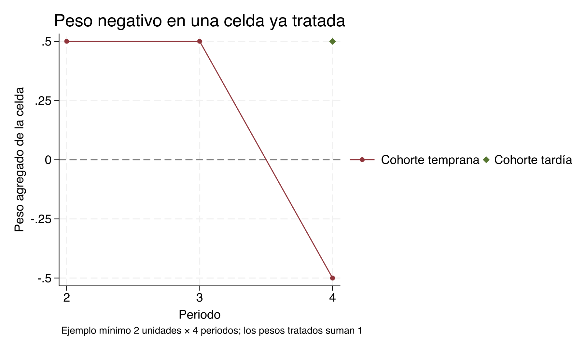
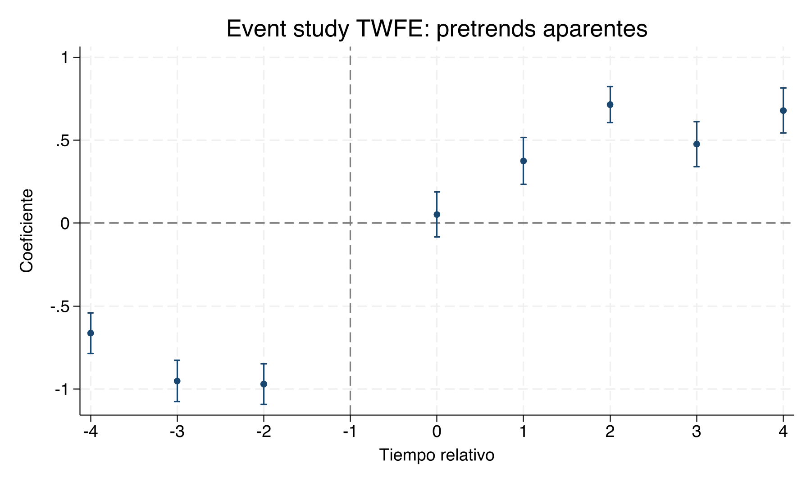

Capitulo 14 Datos de panel y TWFE — Clase empírica
Materiales para la clase
Descargue antes de comenzar
Lecturas centrales
Metas de aprendizaje
- Declarar, describir y visualizar un panel.
- Comparar pooled OLS, FE, FD y RE.
- Verificar la equivalencia 2×2.
- Diagnosticar comparaciones y pesos de TWFE escalonado.
- Elegir métodos modernos según el parámetro.
La secuencia conserva tres hitos de la clase original: la equivalencia en el caso 2×2, una Simulación grande con adopción escalonada y la comparación de estimadores modernos.
Declarar y auditar la estructura del panel
xtsetverifica que cada par unidad–periodo sea único.xtdesmuestra balance, huecos y longitud del panel.xtsumsepara variación overall, between y within.xtlinepermite detectar trayectorias, quiebres y valores anómalos.
Error frecuente
No declare un panel con un identificador ficticio. La misma unidad debe observarse repetidamente; los cortes transversales repetidos requieren otra estructura.
Descomponer variación within y between
Antes de estimar, prediga qué parte de la variación identifica cada modelo:
Predicción antes de correr
Si casi toda la variación de \(X\) es between, ¿qué dificultad tendrá FE? ¿Cambiaría su conclusión si \(X\) fuera una política que varía solo una vez por municipio?
Qué mirar en la salida
Compare las desviaciones estándar between y within. Un FE puede estar bien identificado conceptualmente y, aun así, ser poco preciso si hay muy pocos cambios dentro de unidad.
Comparar pooled OLS, FE, FD y RE
El DGP canónico genera \(X_{it}\) correlacionado con \(\alpha_i\), con \(\beta=3\).
regress Y X i.t, vce(cluster id)
xtreg Y X i.t, fe vce(cluster id)
regress D.Y D.X ibn.t, noconstant vce(cluster id)
xtreg Y X i.t, re vce(cluster id)| DGP | Método | Parámetro | Coeficiente | EE | Verdad |
|---|---|---|---|---|---|
| panel | Pooled OLS | beta within/between | 3.521 | 0.035 | 3 |
| panel | FE | beta within | 3.023 | 0.030 | 3 |
| panel | FD | beta first difference | 3.010 | 0.035 | 3 |
| panel | RE | beta quasi-within | 3.312 | 0.029 | 3 |
Pooled y RE mezclan variación within con la heterogeneidad correlacionada. FE y FD eliminan \(\alpha_i\) y se concentran cerca del valor verdadero.
Pooled OLS: qué mezcla
Predicción antes de correr
Como \(X_{it}=0.7\alpha_i+0.3t+u_{it}\), determine el signo esperado del sesgo pooled antes de mirar la tabla.
Interpretación
Pooled compara simultáneamente personas con distinto \(\alpha_i\) y cambios de una misma persona. El coeficiente 3.521 excede el valor verdadero 3 porque \(X\) carga positivamente la heterogeneidad omitida.
Efectos fijos con xtreg
Qué mirar en la salida
El coeficiente FE, 3.023, usa variación within. Revise también cuántas unidades y periodos contribuyen, y no interprete rho como una prueba causal.
Transformación within a mano
bysort id: egen mean_Y = mean(Y)
bysort id: egen mean_X = mean(X)
gen Y_within = Y-mean_Y
gen X_within = X-mean_X
regress Y_within X_within i.t, noconstant vce(cluster id)El ejercicio permite comprobar la transformación within sin tratar xtreg, fe como una caja negra.
Error frecuente
Si incluye efectos temporales en xtreg, debe reproducir la misma transformación temporal en la regresión manual. Dos especificaciones distintas no tienen por qué coincidir.
Primeras diferencias
FD pierde el primer periodo de cada unidad y pondera cambios consecutivos. Con \(T>2\), no es algebraicamente idéntico a FE.
Predicción antes de correr
¿Esperaría mayor precisión de FE o FD si \(\varepsilon_{it}\) fuera ruido blanco? ¿Y si estuviera fuertemente correlacionado en el tiempo?
Efectos aleatorios y Hausman
El contraste depende de supuestos sobre ambos modelos y no reemplaza el razonamiento sustantivo sobre correlación entre \(X_{it}\) y \(\alpha_i\).
Decisión de diseño
Hausman no “elige” automáticamente el mejor modelo. Primero establezca si el supuesto RE es defendible y si ambos estimadores apuntan al mismo parámetro.
Construir el DiD 2×2 desde cuatro medias
summarize Y if treated==1 & t==0
scalar yt0=r(mean)
summarize Y if treated==1 & t==1
scalar yt1=r(mean)
summarize Y if treated==0 & t==0
scalar yc0=r(mean)
summarize Y if treated==0 & t==1
scalar yc1=r(mean)
display (yt1-yt0)-(yc1-yc0)Predicción antes de correr
Escriba primero las cuatro medias en una tabla 2×2 y marque qué dos cambios forman el contrafactual.
Verificar DiD, FD y TWFE
regress Y treated t D, vce(cluster id)
regress D.Y D.D, vce(cluster id)
reghdfe Y D, absorb(id t) vce(cluster id)| DGP | Método | Parámetro | Coeficiente | EE | Verdad |
|---|---|---|---|---|---|
| 2x2 | DiD manual | ATT | 2.788 | 0.000 | 3 |
| 2x2 | Regression DiD | ATT | 2.788 | 0.141 | 3 |
| 2x2 | First differences | ATT | 2.788 | 0.141 | 3 |
| 2x2 | TWFE | ATT | 2.788 | 0.141 | 3 |
Los cuatro coeficientes son idénticos salvo redondeo. Sus errores estándar pueden variar por la forma de estimación; la interpretación causal exige los supuestos discutidos en la teoría.
Interpretación
La equivalencia numérica comprueba el álgebra del diseño, no tendencias paralelas.
Panel largo con adopción simultánea
Antes de escalonar la adopción, extienda el 2×2 a varios periodos con una fecha común:
clear
set obs 3600
egen id = seq(), block(12)
bysort id: gen t=_n
gen treated=id>150
gen D=treated & t>=7
gen Y=id/100+.25*t+2*D+rnormal()
xtset id t
reghdfe Y D, absorb(id t) vce(cluster id)Qué mirar en la salida
Con fecha común y efecto constante, no aparecen comparaciones entre cohortes tratadas en fechas distintas. Este es el puente entre DiD multiperiodo y el problema escalonado.

Tendencias paralelas y una violación deliberada
gen trend_violation=.15*treated*t
gen Y_bad=Y+trend_violation
reghdfe Y_bad D, absorb(id t) vce(cluster id)Compare trayectorias pretratamiento y estime el mismo modelo con y sin la tendencia adicional.
Error frecuente
No “arregle” el segundo DGP agregando mecánicamente c.t#i.treated. La tendencia específica impone una extrapolación, puede absorber parte del tratamiento y cambia el estimando.
Decisión de diseño
Si las tendencias previas divergen, proponga un control alternativo, una ventana distinta o un diseño diferente antes de añadir términos funcionales.

Mismo timing con efectos heterogéneos
replace D=(id>100 & t>=7)
gen tau=cond(id<=200,2,4)
gen Y_hetero=id/100+.25*t+tau*D+rnormal()
reghdfe Y_hetero D, absorb(id t) vce(cluster id)Con el mismo timing, TWFE promedia heterogeneidad entre unidades sin usar una cohorte tratada como control de otra fecha. Calcule el promedio correcto ponderando observaciones tratadas.
Interpretación
La heterogeneidad por sí sola no produce el problema Bacon de comparaciones temprana–tardía. El problema central requiere también variación en adopción.

Adopción escalonada con efectos dinámicos
El DGP tiene 900 unidades, 12 periodos, una cohorte que adopta en \(t=5\), otra en \(t=8\) y una nunca tratada. Los efectos crecen con la exposición y difieren entre cohortes.
gen cohort = cond(id<=300,5,cond(id<=600,8,0))
gen D = cohort>0 & t>=cohort
gen event_time = t-cohort if cohort>0
gen double tau = 0
replace tau = 1 + .45*event_time if cohort==5 & D
replace tau = 2 + .25*event_time if cohort==8 & D
gen double Y0 = alpha_i + .25*t + rnormal()
gen double Y = Y0 + tau
* Auditar la heterogeneidad antes de estimar
tabstat tau if D, by(cohort) statistics(n mean min max)
table cohort event_time if D, statistic(mean tau)
summarize tau if D
reghdfe Y D, absorb(id t) vce(cluster id)La heterogeneidad no queda implícita: para la cohorte temprana el efecto comienza en 1 y crece 0.45 por periodo de exposición; para la tardía comienza en 2 y crece 0.25. Por tanto, \(\tau_{g,e}\) varía entre cohortes y dentro de cada cohorte a lo largo del tiempo.
Chequeo pedagógico del DGP
Antes de interpretar TWFE, verifique dos ingredientes distintos:
tab cohortconfirma adopción escalonada: \(g=5\), \(g=8\) y nunca tratados.table cohort event_time ...confirma efectos heterogéneos y dinámicos: las celdas tratadas no comparten el mismotau.
Si cualquiera de los dos ingredientes desaparece, este ejemplo ya no representa el problema central que queremos estudiar.
| DGP | Método | Parámetro | Muestra | Coeficiente | EE |
|---|---|---|---|---|---|
| staggered | True ATT | average treated-cell effect | all treated cells | 2.546 | 0.000 |
| staggered | TWFE | implicit weighted average | all cohorts and periods | 2.091 | 0.042 |
TWFE no recupera el promedio simple de las celdas tratadas porque residualiza el tratamiento y mezcla comparaciones con distinta exposición.

Predicción antes de correr
La cohorte temprana acumula más periodos tratados. Antes de estimar, indique si espera que TWFE quede por encima o por debajo del ATT overall y qué comparación puede generar la diferencia.
Leer bacondecomp fila por fila
Lea la salida en tres familias:
Never_v_timing: tratada frente a nunca tratada;Early_v_Late: temprana frente a tardía antes de su adopción;Late_v_Early: tardía frente a temprana ya tratada.
Una salida estilizada puede organizarse así:
| Tipo | Beta 2×2 | Peso Bacon | aporte ponderado |
|---|---|---|---|
Early_v_Late |
\(\widehat\beta_{EL}\) | \(\omega_{EL}\) | \(\omega_{EL}\widehat\beta_{EL}\) |
Late_v_Early |
\(\widehat\beta_{LE}\) | \(\omega_{LE}\) | \(\omega_{LE}\widehat\beta_{LE}\) |
Never_v_timing |
\(\widehat\beta_{NU}\) | \(\omega_{NU}\) | \(\omega_{NU}\widehat\beta_{NU}\) |
Compruebe:
\[ \omega_{EL}+\omega_{LE}+\omega_{NU}=1 \]
y que la suma de la última columna reproduce el coeficiente TWFE.
Error frecuente
bacondecomp muestra comparaciones y pesos en la descomposición Bacon. No debe describirse como si reportara directamente todos los pesos sobre \(ATT(g,t)\).
Qué mirar en la salida
Una participación alta de Late_v_Early es preocupante cuando el efecto de la cohorte temprana cambia con exposición, porque esa cohorte ya tratada funciona como control.
Calcular los pesos causales a mano
Residualice \(D_{it}\) sin depender inicialmente de un paquete:
bysort id: egen D_bar_i=mean(D)
bysort t: egen D_bar_t=mean(D)
summarize D
scalar D_bar=r(mean)
gen double D_tilde=D-D_bar_i-D_bar_t+D_bar
egen denom=total(D_tilde^2)
gen double peso_causal=D_tilde/denom if D==1
summarize peso_causal if D==1, detail
count if peso_causal<0 & D==1Para agregar por cohorte–periodo:
collapse (sum) peso_causal (mean) tau, by(cohort t D)
keep if D==1
gen aporte_peso=peso_causal*tau
egen beta_twfe_teorico=total(aporte_peso)Predicción antes de correr
¿En qué celdas espera \(D_{it}\) residualizado negativo: al comienzo o al final de la exposición de la cohorte temprana?
Interpretación
Compare los pesos causales con los pesos \(N_{g,t}/\sum N_{g,t}\) del ATT overall. Ambos suman uno, pero solo los segundos forman necesariamente un promedio convexo.

Diagnóstico con twowayfeweights
Esta herramienta responde una pregunta complementaria: cómo pondera TWFE efectos grupo-periodo y cuán robusto es su signo a heterogeneidad.
Decisión de diseño
Use bacondecomp para entender de dónde vienen las comparaciones 2×2 y twowayfeweights para estudiar pesos implícitos sobre efectos causales.
Event study TWFE contaminado
| DGP | Método | Parámetro | Horizonte | Coeficiente | EE |
|---|---|---|---|---|---|
| staggered | TWFE event study | relative-time coefficient | -4 | -0.663 | 0.062 |
| staggered | TWFE event study | relative-time coefficient | -3 | -0.951 | 0.064 |
| staggered | TWFE event study | relative-time coefficient | -2 | -0.970 | 0.062 |
| staggered | TWFE event study | relative-time coefficient | 0 | 0.052 | 0.070 |
| staggered | TWFE event study | relative-time coefficient | 1 | 0.375 | 0.072 |
| staggered | TWFE event study | relative-time coefficient | 2 | 0.714 | 0.055 |
| staggered | TWFE event study | relative-time coefficient | 3 | 0.477 | 0.069 |
| staggered | TWFE event study | relative-time coefficient | 4 | 0.678 | 0.069 |
Los leads negativos aparecen aunque el DGP no tiene anticipación. Son contaminación de efectos heterogéneos de otros periodos, no evidencia de que las unidades hayan respondido antes.

Error frecuente
No use un test conjunto de leads TWFE como prueba definitiva de tendencias paralelas en este DGP: los coeficientes ya están contaminados por efectos postratamiento heterogéneos.
Comparar estimadores sin mezclar parámetros
| Método | Parámetro | Muestra de comparación | Horizonte |
|---|---|---|---|
| csdid | ATT(g,t) and explicit aggregations | never or not-yet treated | calendar/group/event |
| eventstudyinteract | interaction-weighted relative-time average | chosen control cohort | relative time |
| did_imputation | event effects by imputation | untreated observations | requested horizons |
| did_multiplegt_dyn | dynamic current-vs-status quo effects | switchers and valid controls | dynamic/cumulative |
| did2s | parameter defined by second stage | untreated first-stage sample | second-stage variables |
Sun y Abraham
eventstudyinteract Y lead4 lead3 lead2 lag0-lag4, ///
absorb(id t) cohort(cohort) control_cohort(never_treat) ///
vce(cluster id)eventstudyinteract produce promedios interaction-weighted por tiempo relativo.
Imputación de Borusyak, Jaravel y Spiess
El método aprende el resultado no tratado con observaciones no tratadas y construye efectos de evento por imputación.
Diseños generales y tratamientos no absorbentes
La instalación correcta es ssc install did_multiplegt_dyn, replace. Sus efectos dinámicos pueden representar cambios actuales frente al status quo y diseños más generales.
Estimación en dos etapas
En did2s, el parámetro depende de las variables de la segunda etapa. Para event_plot, guarde cada matriz con el mismo nombre que luego consume el gráfico:
No combine en una figura métodos con poblaciones, agregaciones u horizontes incompatibles.
Predicción antes de correr
Antes de comparar dos curvas, complete para cada método: población, control, parámetro, horizonte, normalización y anticipación permitida.
Qué mirar en la salida
Dos coeficientes con el mismo rótulo “evento \(k\)” pueden promediar cohortes distintas. La comparación válida exige alinear soporte y pesos, no solo el eje horizontal.
¿Qué supone cada estimador?
Ahora que el problema de TWFE y las cinco alternativas ya están sobre la mesa, use esta matriz como síntesis. La pregunta no es cuál comando es más moderno, sino qué observaciones construyen el resultado no tratado de cada cohorte y si esa comparación ofrece un contrafactual defendible.
| Método | Supuesto | Control | Diagnóstico | Limitación |
|---|---|---|---|---|
| TWFE | Tendencia contrafactual común de \(Y(D=0)\) para las comparaciones implícitas | Nunca tratados, no-aún tratados y, mecánicamente, cohortes ya tratadas | Gráficas pretratamiento, leads y descomposición de comparaciones | No corrige la contaminación cuando una cohorte ya tratada sirve como control y los efectos son heterogéneos |
csdid |
Tendencias paralelas para cada \(ATT(g,t)\), incondicionales o condicionales en covariables pretratamiento | Nunca tratados o no-aún tratados, según la opción declarada | estat event, estat pretrend, intervalos pretratamiento y placebos por cohorte |
No prueba tendencias paralelas; poco soporte común puede volver frágil la reponderación |
eventstudyinteract |
Tendencias contrafactuales paralelas entre cada cohorte y la cohorte de control elegida | Cohorte nunca tratada o última cohorte, todavía no tratada en el horizonte usado | Event study interaction-weighted, intervalos de confianza de los leads y prueba conjunta | No garantiza tendencias paralelas y exige revisar soporte y composición por horizonte |
did_imputation |
El modelo del resultado no tratado, estimado únicamente antes del tratamiento, extrapola correctamente a las celdas tratadas | Observaciones nunca tratadas y no-aún tratadas usadas para estimar el modelo no tratado | Opción pretrend(), residuales pretratamiento, placebos e intervalos por horizonte |
No corrige una extrapolación incorrecta del modelo no tratado ni falta de soporte |
did2s |
La primera etapa modela correctamente \(Y(D=0)\) con observaciones no tratadas y la segunda etapa define el evento de interés | Nunca tratados y no-aún tratados en la primera etapa | Leads de la segunda etapa, intervalos, prueba conjunta y placebos | No elimina el sesgo si la primera etapa extrapola mal o si cambia la composición |
did_multiplegt_dyn |
Los switchers y stayers pertinentes habrían tenido tendencias contrafactuales paralelas, con no anticipación en el horizonte | Stayers, quasi-stayers o unidades que aún conservan el status quo | Opción placebo(), efectos placebo, intervalos y gráficas por horizonte |
No verifica el supuesto; pocos switchers o cambios reversibles pueden reducir potencia y soporte |
Regla de lectura
Primero fije estimando, población y control; después escoja el comando. Los métodos modernos evitan comparaciones contaminadas específicas, pero ninguno vuelve innecesarias las tendencias paralelas.
Tendencias paralelas: del supuesto al diagnóstico
La matriz aclara qué supuesto corresponde a cada solución. El paso siguiente es evaluar cuánta evidencia ofrece el diseño a favor de ese supuesto, sin confundir un diagnóstico con una prueba.
1. Grafique los resultados observados, sin ajustar. La figura no identifica el efecto, pero revela escala, composición, fechas de adopción y divergencias que el modelo puede ocultar.
preserve
collapse (mean) Y, by(cohort t)
twoway (connected Y t if cohort==5) ///
(connected Y t if cohort==8) ///
(connected Y t if cohort==0), ///
xline(5 8, lpattern(dash)) legend(order(1 "g=5" 2 "g=8" 3 "Nunca"))
restore2. Defina explícitamente cohorte y control. Verifique que cohort sea la primera fecha de tratamiento, que cero identifique a los nunca tratados y que las unidades no-aún tratadas solo entren mientras permanezcan sin tratamiento.
bysort id (t): assert cohort==cohort[1]
gen byte never_treat=cohort==0
tab cohort
tab cohort t if D==03. Estime un event study compatible con esa comparación. Para Sun–Abraham, cada interacción cohorte–evento se compara con la cohorte de control declarada; no sustituya esta estimación por el event study TWFE contaminado mostrado arriba.
eventstudyinteract Y lead4 lead3 lead2 lag0-lag4, ///
absorb(id t) cohort(cohort) control_cohort(never_treat) ///
vce(cluster id)
matrix list e(b_iw)
matrix list e(V_iw)
event_plot e(b_iw)#e(V_iw), stub_lead(lead#) stub_lag(lag#) together4. Lea los preperiodos con sus intervalos. Reporte cada estimación y su incertidumbre, además de una prueba conjunta cuando el comando la permita. Un coeficiente impreciso cerca de cero y uno precisamente estimado cerca de cero aportan evidencia muy distinta.
5. Ejecute placebos coherentes con el estimador. Por ejemplo:
csdid Y, ivar(id) time(t) gvar(cohort) notyet
estat event
estat pretrend
did_multiplegt_dyn Y id t D, effects(4) placebo(4) cluster(id)6. Discuta potencia. La ausencia de rechazo conjunto no demuestra el supuesto. Informe si el diseño habría detectado una desviación económicamente relevante mediante intervalos pretratamiento, un efecto mínimo detectable o simulaciones con el número real de cohortes y clústeres.
7. Haga sensibilidad. Pregunte cuánto tendría que desviarse la tendencia contrafactual postratamiento para cambiar la conclusión. Esta etapa complementa —no reemplaza— el argumento institucional, la elección del control y los placebos.
Lo que no puede concluirse
Que los leads no sean individual o conjuntamente significativos no verifica el contrafactual postratamiento. También puede reflejar pocos preperiodos, pocos clústeres, intervalos anchos o una prueba con baja potencia.
Extensión avanzada opcional: HonestDiD
honestdid implementa el análisis de sensibilidad de Rambachan y Roth. En lugar de asumir desviación exactamente cero, calcula conjuntos de confianza robustos bajo restricciones explícitas sobre la magnitud relativa o la suavidad de la desviación postratamiento.
HonestDiD no prueba, valida, verifica, repara ni elimina las tendencias paralelas: es un análisis de sensibilidad. Su entrada debe ser el vector y la matriz de covarianzas de un event study compatible con el diseño. En este ejemplo se usan los coeficientes interaction-weighted de eventstudyinteract, nunca los del TWFE contaminado.
* Instalación estable y verificación del plugin compilado (una sola vez)
ssc install honestdid
honestdid _plugin_check* Estimación compatible: Sun-Abraham con cohorte nunca tratada como control
eventstudyinteract Y lead4 lead3 lead2 lag0-lag4, ///
absorb(id t) cohort(cohort) control_cohort(never_treat) ///
vce(cluster id)
* eventstudyinteract guarda el estimador IW en e(b_iw) y e(V_iw)
matrix b_iw = e(b_iw)
matrix V_iw = e(V_iw)
* Repostear exactamente esas matrices permite auditarlas como e(b) y e(V)
ereturn clear
ereturn post b_iw V_iw
matrix b_honest = e(b)
matrix V_honest = e(V)
matrix list b_honest
matrix list V_honest
* Aquí 1/3 son leads y 4/8 son efectos post; confirme siempre el orden
honestdid, pre(1/3) post(4/8) b(b_honest) vcov(V_honest) ///
mvec(0(0.5)2) delta(rm) coefplotCómo leer la sensibilidad
mvec() recorre valores de \(\bar M\), que permiten desviaciones postratamiento cada vez mayores respecto de las observadas antes del tratamiento. Reporte los conjuntos de confianza y el breakdown value: el menor \(\bar M\) para el cual cambia la conclusión sustantiva. No escoja \(\bar M\) para “salvar” significancia; justifíquelo con conocimiento económico e institucional.
Ejemplo opcional
El bloque requiere el plugin compilado de honestdid. Si _plugin_check falla en el computador del aula, conserve la estimación compatible, exporte b_honest y V_honest, y ejecute la sensibilidad después de instalar el binario apropiado. La clase principal no depende de que el plugin esté disponible.
Checklist aplicado
Antes de correr un comando, documente:
| Decisión | Pregunta |
|---|---|
| Tratamiento | ¿Binario, continuo, multivaluado, absorbente o reversible? |
| Controles | ¿Nunca tratados, no-aún tratados, stayers o quasi-stayers? |
| Parámetro | ¿ATT global, \(ATT(g,t)\), evento, acumulado o status quo? |
| Dinámica | ¿Anticipación o efectos rezagados? |
| Inferencia | ¿Nivel de asignación, clustering y número de clústeres? |
| Covariables | ¿Pretratamiento o afectadas por el programa? |
| Comparación | ¿Misma población y horizonte entre métodos? |
Preguntas tipo examen
Código: TWFE-S1
Tipo: Panel y estimación
Fuente: Elaboración propia
Enunciado: Declare el panel, descomponga la variación de \(X\) y estime pooled OLS, FE, FD y RE. Explique las diferencias usando la correlación entre \(X_{it}\) y \(\alpha_i\).
Puntaje sugerido: 5 puntos
Comandos permitidos: xtset, xtsum, regress, xtreg
Producto esperado: Código, tabla y explicación de máximo 180 palabras.
Código: TWFE-S2
Tipo: Equivalencia 2×2
Fuente: Elaboración propia
Enunciado: Estime DiD manual, regresión DiD, primeras diferencias y TWFE en un panel de dos periodos. Verifique la igualdad y separe esa comprobación de la discusión de identificación.
Puntaje sugerido: 5 puntos
Comandos permitidos: summarize, regress, reghdfe
Producto esperado: Cuatro coeficientes y checklist causal.
Código: TWFE-S3
Tipo: Diagnóstico escalonado
Fuente: Goodman-Bacon; de Chaisemartin y D’Haultfœuille
Enunciado: En el DGP escalonado, ejecute los dos diagnósticos de pesos. Explique qué pregunta responde cada uno y señale las comparaciones potencialmente contaminadas.
Puntaje sugerido: 5 puntos
Comandos permitidos: reghdfe, bacondecomp, twowayfeweights
Producto esperado: Dos salidas y diagnóstico comparativo.
Código: TWFE-S4
Tipo: Selección de estimador
Fuente: Elaboración propia
Enunciado: Para un tratamiento reversible con efectos rezagados, defina el parámetro y seleccione un estimador. Justifique controles, horizonte, clustering y por qué no usaría automáticamente un event study TWFE.
Puntaje sugerido: 5 puntos
Comandos permitidos: did_multiplegt_dyn, csdid, eventstudyinteract, did_imputation, did2s
Producto esperado: Especificación ejecutable y memo de máximo 250 palabras.